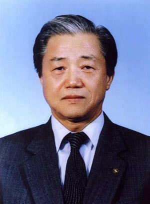
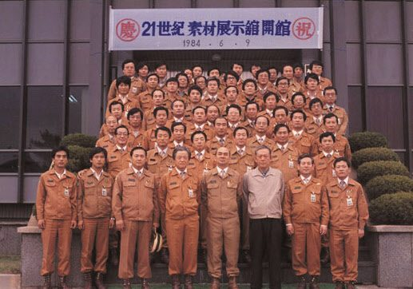
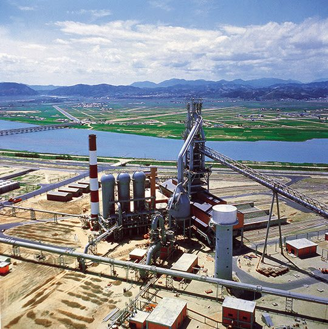
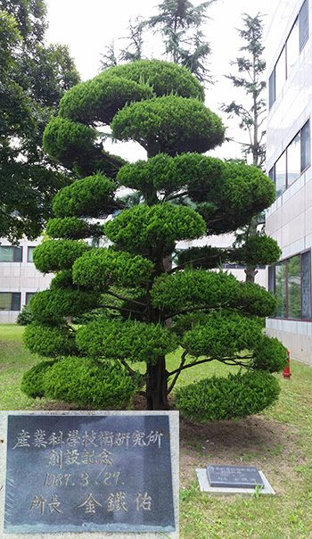

연재일 2014-10-16출처 조선일보 프리미엄조선 연재
1965년 여름, 뜨거운 서울거리를 한국사회의 격렬한 갈등이 더욱 뜨겁게 달구고 있었다. 6월 22일에 조인된 ‘한일조약’이 기폭제였다. 사정없고 거침없는 흑백논리가 세워졌다. 한국과 일본의 국교 정상화를 핵심으로 하는 한일조약의 비준에 반대하는 사람들은 ‘정의와 자주’의 민족세력, 한일조약의 비준에 찬성하는 사람들은 ‘불의와 매판’의 친일세력. 이렇게 사회가 극단적으로 갈라진 가운데 국회는 8월 14일 공화당 단독으로 비준안을 통과시켰다.
이때 김형욱 중앙정보부장이 ‘인민혁명당 사건’을 터뜨렸다. 박정희 정권의 중앙정보부가 인권과 민주주의를 억압해나갈 신호탄을 쏘아올린 격이었다. 대학가의 시위는 격렬해졌다. 8월 26일 서울 전역에 위수령이 내려져 또다시 군대가 캠퍼스를 장악했다. 그런데 한일조약 국회비준과 위수령 선포 사이, 8월 18일, 한국 현대사의 중대 결정이 내려졌다. 2만 병력 월남(베트남) 파병에 대한 국회 비준이 바로 그것이었다.
정치적으로나 사회적으로나 혼란한 계절에 박태준은 정치와 담을 쌓은 채 대한중석 경영 정상화에 몰두하는 한편으로 박정희에게 밀지처럼 받은 특명인 ‘종합제철’에 깊은 주의와 관심을 기울이고 있었다. 박태준이 도쿄에서 재일조선인 2세로서 뛰어난 제철엔지니어인 김철우 박사와 처음 만난 것도 그해 가을의 어느 날이었다.
‘동경대학교 생산기술연구소에 근무하는 김철우 박사를 모셔 오라.’
박태준의 그 지시를 받은 이는 대한중석 도쿄 주재원 주영석이었다.
김철우. 1926년 일본에서 태어난 재일조선인 2세. 아버지는 경남 의령, 어머니는 합천이 고향이다. 열심히 일해도 가난을 벗어나지 못한 부모 슬하에서 김철우는 희망의 끈을 놓지 않고 금속학도의 길을 택해 도쿄공업대학, 도쿄대 대학원에서 공부한 뒤 도쿄대 생산기술연구소에 둥지를 틀었다. 그는 첫 봉급이 1만2000엔이었다는 것을 늘 잊지 못한다.

김철우는 한국에서 찾아온 어떤 사장이 만나자고 하는 느닷없는 제안을 받고 조금은 긴장한 마음가짐으로 도쿄의 고급호텔 레스토랑으로 나갔다. 당시 그의 봉급으로는 출입하기 어려운 레스토랑이었다. 박태준과 김철우의 첫 만남. 아직 김철우의 한국말이 어눌해서 일본말도 유창한 박태준이 일본말을 써야 했다.
김철우 박사가 『박태준 평전』을 쓴 작가 이대환과 만나서 ‘박태준과 김철우, 김철우와 한국 종합제철’에 관한 일들을 들려준 때는 2005년으로, 그때 그는 대전에 거처하는 일흔아홉 살의 노인이었는데, 막힘없는 모국어로 육십여 년 전의 일들을 초롱초롱하게 불러냈다.(이대환 엮음, 『쇳물에 흐르는 푸른 청춘』 참조)
“이미 박 사장(박태준 대한중석 사장)이 제철소에 관심이 많았어요. 아마도 박정희 대통령의 언질을 받았던 것일 텐데, 그 자리에서 박 사장이 그런 말을 안 했지만 나는 그렇게 직감을 했고, 나중에는 내가 적중한 거였다는 것을 알게 됐지요. 첫 만남에서 박 사장이 나에게 제철소 건설에 대해 기술적으로나 여러 가지로 도와 달라고 부탁했어요.
당시 낙후된 조국의 경제나 산업의 실상을 잘 아는 자이니치(재일조선인 2세) 지식인으로서, 제철이나 금속을 잘 아는 자이니치 학자로서, 두 손 들어 환영할 부탁이었지 주저할 부탁이 아니지 않습니까?”

박태준과의 첫 만남에 대해 김철우는 특히 ‘망고’를 오래 잊지 못한다.
“첫 식사 자리에 후식으로 내가 먹어보지 못한 과일이 나왔는데, 아주 맛이 좋아서 내가 이름을 물었더니, 박 사장이 ‘망고’라고 알려 줬어요. 이렇게 우리의 첫 만남에는 망고가 남게 되었습니다. 가난하게 살아온 나는 그것을 ‘대단한 사람’이나 먹는 거라고 알게 됐지요. 그 뒤로는 ‘대단한 망고’를 맛보게 해준 박 사장과 자주 만나게 되었지만요. 허허허…”
2013년 12월 김철우 박사는 도쿄에서 별세했다. 향년 87세(1926년 생). 그의 부음을 알리는 한국 언론은 ‘포항제철 1기 건설의 숨은 공로자’라는 감사의 말을 바쳤다. 그것은 정직한 헌사였다.
KISA가 작성한 한국 종합제철소 건설의 일반기술계획(GEP)에 대한 검토작업에도 참여하여 그것이 얼마나 엉터리이며 설비들이 어떤 중고품인가를 알아내게 되는 김철우는 박태준의 초빙을 받아 1971년 포항종합제철 기술담당 이사로 부임해왔다. 특히 제1고로 건설에서 중요한 기술자문을 했고, 포철 2기(연산 270만 톤 체제) 건설의 계획위원장도 맡았던 김철우.

그 뛰어난 금속학자(제철엔지니어)의 인생마저도 ‘분단 조국의 비극’이 관통했다. 103만 톤 체제의 포항제철 1기 준공 무렵인 1973년, 그는 졸지에 구속되고 말았다. 그리고 무려 6년 6개월이나 영어생활을 하게 된다. ‘1970년에 한 번 입북(入北)한 경력’이 뒤늦게 밝혀진 것이었다.
북한의 재일동포 북송사업 조류를 타고(남한은 ‘북송선’이라 부르고 북한은 ‘귀국선’이라 부른 ‘만경봉호’를 타고) 북한으로 들어간 동생네 가족과 상봉하기 위한 입북이었지만, 그때 살벌한 분단체제는 남에서든 북에서든 그런 인물을 간단히 ‘스파이’로 몰아세우게 했으니….
1979년 늦가을에 스파이 혐의를 벗고 감옥을 나온 김철우는 그의 공로를 잊지 않은 박태준의 배려로 정부의 승인을 받아 1982년부터 포항제철에 복직하여 1989년까지 부사장, 포항산업과학연구원(RIST) 초대 원장 등을 역임한다. 자신의 처지야말로 분단 조국의 비극적 전형이란 인식을 뼈에 사무치게 하면서 원망도 절망도 없이 감옥살이 6년 6개월을 감당해낸 뒤로 어언 26년쯤 더 흘러간 2005년 여름, 노무현 대통령의 참여정부가 집권의 절반을 지나가는 그 즈음, 김철우는 ‘한국 종합제철의 추억’을 물으러 찾아온 초면의 작가에게 이렇게 털어놓았다.
“한국 산업화의 기간이 되었던 포항제철에 기여했다는 점이 자이니치로서 큰 보람었다는 생각을 하고 있고, 당시의 극단적인 냉전체제는 나 같은 사람에게도 그토록 가혹한 고통을 안겼는데, 오늘날의 번영 앞에서 나는 박정희 대통령의 공적을 높이 평가합니다.”
